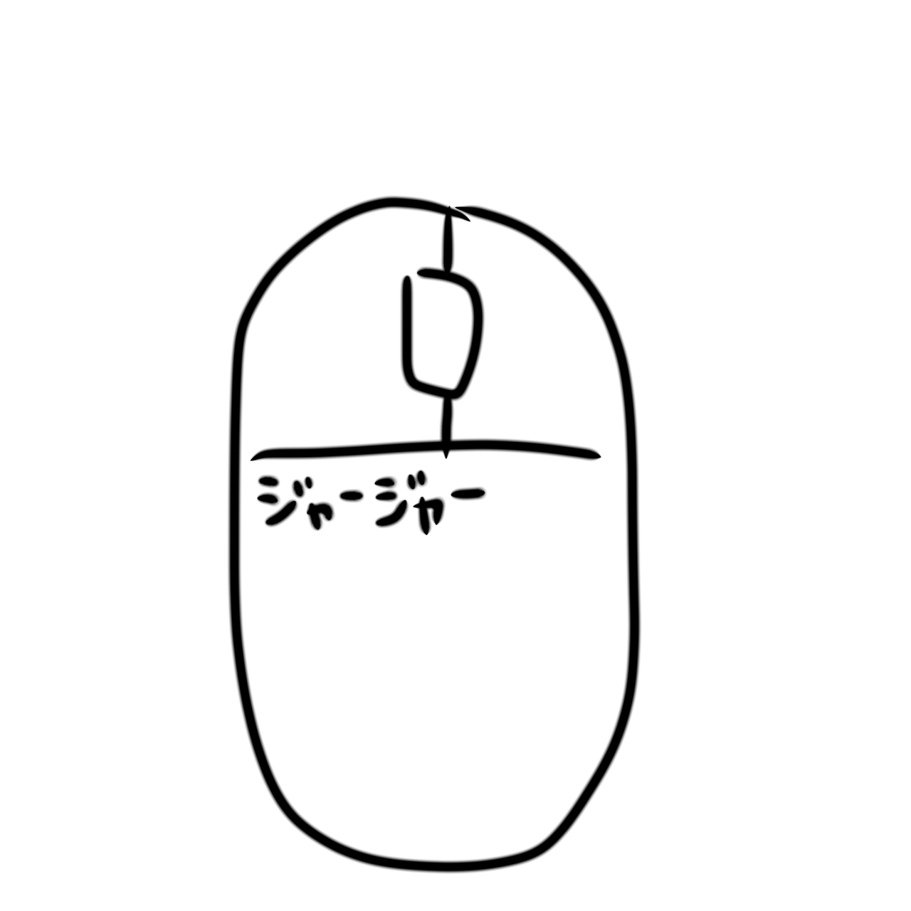

サイトについて
みんなのデバイス置き場は、 ゲーミングデバイス・ガジェット好きのための レビュー共有サイトです。
マウス、キーボード、マウスパッド、 オーディオ、モニターなど、 実際に使用したデバイスの感想や評価を投稿できます。
主な機能
・レビュー投稿
・掲示板
・プロフィール(Twitter連携)
・コメント＆いいね機能等 ...
掲示板について
掲示板では、 デバイス相談・感度共有・雑談など、 レビュー以外の交流ができます。
プロフィール機能
ユーザーごとにプロフィールを作成でき、 アイコン・自己紹介・Xアカウントを 設定できます。
お問い合わせ
ご質問・ご意見がある場合は、 Xアカウントまでご連絡ください。
